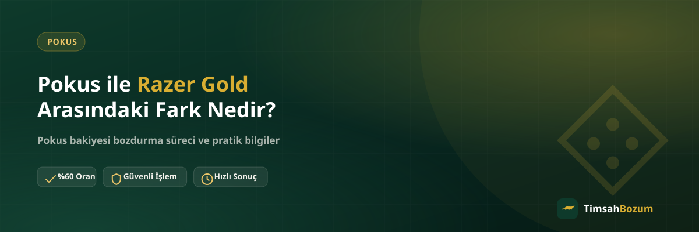

Pokus ve Razer Gold, bozum sitelerinde en çok karıştırılan iki hizmetten. İkisi de oyuncular tarafından yoğun kullanılıyor, ikisinde de "elimde kalan bunu nakde çevirebilir miyim" sorusu sorulduğunda TimsahBozum devreye giriyor. Ama altyapıları, bozdurma mantıkları ve dikkat edilmesi gereken noktalar birbirinden epey farklı. Bu yazıda ikisini yan yana koyup hangi durumda hangi hizmetin geçerli olduğunu açıklıyoruz.
Pokus ve Razer Gold Temelde Nedir?
Pokus, oyun içi satın alımlar için kullanılan bir bakiye sistemi; hesabına yüklediğin tutar bir bakiye olarak görünür ve zaman içinde parça parça harcanabilir. Razer Gold ise farklı bir mantıkla çalışır: hediye kartı veya online satın alma yoluyla elde edilen, üzerinde belirli bir değer taşıyan tek kullanımlık bir koddur. Bu temel fark, bozum sürecinin her adımını şekillendiriyor.
Pokus Bakiyesi Nasıl İşler?
Pokus hesabındaki bakiye, hesaba bağlı kalır ve istediğin zaman kullanılabilir. Bozum yapmak istediğinde hesabındaki güncel bakiyeyi gösteren bir ekran görüntüsü yeterli olur, kodu girip "bozmak" gibi bir işlem söz konusu değildir.
Razer Gold Kodu Nasıl İşler?
Razer Gold'da elinde fiziksel veya dijital bir kod bulunur. Bu kod kullanılmadığı sürece değerini taşır, ama bir kez kullanıldığında (hesaba yüklendiğinde) artık bozum için geçerli olmaz. Bu yüzden Razer Gold'da süreç, kodun kendisinin WhatsApp üzerinden paylaşılmasıyla başlar.
Kısmi Bozum: En Büyük Fark Burada
Pokus ile Razer Gold arasındaki en kritik fark kısmi bozum konusunda ortaya çıkıyor. Pokus bakiye tabanlı bir hizmet olduğu için bakiyenin tamamını bozdurmak zorunda değilsin, bir kısmını bozdurup kalanını hesabında bırakabilirsin. Razer Gold'da ise durum tam tersi: kod tek kullanımlık olduğu için kodun tam değeri üzerinden tek seferde değerlendirilir, "kodun yarısını bozdur" gibi bir seçenek yoktur.
Bu ayrımı bilmeden işleme başlayan kullanıcılar bazen Razer Gold kodunda kısmi bozum talep ediyor, bu da gereksiz bir geri dönüş ve zaman kaybına yol açıyor. Hangi hizmeti kullanacağına karar verirken bu farkı aklında tutman ilk mesajını doğru yazmanı sağlar.
Pokus mu Razer Gold mu Daha Avantajlı?
Bu soru aslında yanlış bir karşılaştırma, çünkü elinde hangisi varsa onu bozdurabilirsin; ikisi arasında seçim yapma durumu genelde söz konusu olmaz. Güncel oranlar Pokus'ta %60, Razer Gold'da %70 seviyesinde, ama oranlar piyasa koşullarına göre değişebileceği için işlem öncesi WhatsApp'tan güncel oranı teyit etmek en sağlıklısı. Elinde Pokus bakiyesi varsa Pokus süreci, Razer Gold kodu varsa Razer Gold süreci işler; ikisi birbirinin alternatifi değil.
İşlem Güvenilir mi?
Her iki hizmette de süreç aynı güvenlik mantığıyla yürür: işlem yalnızca resmi WhatsApp hattından (+90 543 887 21 71) yapılır, hesabına erişim istenmez, üyelik veya form doldurma gerekmez. SMS doğrulama kodu hiçbir durumda talep edilmez; böyle bir istek gelirse işlemi durdurup numarayı doğrulaman gerekir.
Süreç Ne Kadar Sürer?
Her iki hizmette de süreç benzer adımlardan geçer: bilgini (bakiye ekran görüntüsü veya kod) paylaşırsın, oranı teyit edersin, onay sonrası ödeme WhatsApp üzerinden görüşülen yöntemle yapılır. Kesin bir süre vermek yerine, güncel işlem hızını işlem öncesi WhatsApp'tan sorman en doğru yaklaşım; TimsahBozum her gün 10:00-03:00 arası aktif.
Hangi Bilgiler Hazır Olmalı?
Pokus için güncel bakiyeni gösteren okunaklı bir ekran görüntüsü yeterli. Razer Gold için kodun kendisi (karakterlerin tam ve doğru olması önemli) gerekiyor. Her iki durumda da bilgini ilk mesajında eksiksiz paylaşman, ileri geri mesajlaşmayı önler ve süreci hızlandırır.
Hem Pokus Hem Razer Gold'un Varsa Ne Yapmalısın?
Bazı kullanıcıların elinde aynı anda hem kullanılmayan bir Pokus bakiyesi hem de bir Razer Gold kodu olabiliyor. Bu durumda ikisini ayrı ayrı mesaj göndermek yerine tek mesajda belirtmen süreci kolaylaştırır: "Pokus bakiyem var, bir de Razer Gold kodum var" diyerek ikisinin bilgisini birlikte paylaşabilirsin. Oranlar ayrı ayrı teyit edilir ama görüşme tek bir akış içinde ilerler.
Sık Karıştırılan Noktalar
En sık karışıklık, Pokus'ta da Razer Gold'daki gibi kod paylaşılması gerektiği yanılgısından çıkıyor. Pokus'ta kod yok, bakiye var; bu yüzden istenen şey ekran görüntüsü. Diğer bir karışıklık da oranların aynı olduğu beklentisi; iki hizmetin oranı birbirinden bağımsız belirlendiği için farklı çıkması normal, bunu bir hata olarak düşünmemek gerekir.
Elindekinin Pokus mu Razer Gold mu Olduğunu Nasıl Ayırt Edersin?
Bazen hangi hizmete sahip olduğunu netleştirmek bile kafa karıştırabiliyor. Elinde bir ekran görüntüsü, uygulama içi bir bakiye sayısı varsa bu Pokus'tur; çünkü Pokus bir hesap bakiyesidir, fiziksel veya dijital bir kod şeklinde gelmez. Elinde ise bir dizi harf ve rakamdan oluşan bir kod, bir kazı kazan kart veya e-posta ile gelen bir kod varsa bu Razer Gold'dur. Bu basit kontrol, hangi süreci başlatacağını baştan netleştirir ve WhatsApp'ta doğru bilgiyi paylaşmanı sağlar.
Her İkisinde de Hesaba Erişim İsteniyor mu?
Hayır, ne Pokus ne de Razer Gold bozdururken hesabına veya oyun profiline erişim istenir. Pokus'ta sadece bakiyeni gösteren bir ekran görüntüsü, Razer Gold'da ise sadece kodun kendisi yeterlidir. Hesap şifresi, oyun profili girişi veya benzeri bir bilgi hiçbir şekilde talep edilmez; böyle bir istekle karşılaşırsan bu TimsahBozum'un resmi süreciyle ilgisi olmayan bir talep demektir.
Elinde Pokus bakiyesi veya Razer Gold kodu varsa, hangisi olduğunu belirterek WhatsApp hattımıza yazman yeterli; oranı teyit edip süreci birlikte ilerletiyoruz.
İlgili Yazılar
- Pokus ile Mobil Ödeme Arasındaki Fark Nedir?
- Razer Gold Kodu Nasıl Bozdurulur? Adım Adım Rehber
- Pokus Bakiyesi Nedir, Nasıl Oluşur?